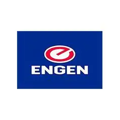

At GreenArch Innovation, we develop community-driven aquaculture and hydroponic farms that
empower youth, promote sustainability, and increase local food production.
Explore Our Impact
Select a category to view our innovative sustainable
agriculture projects

Aquaponics for Khanyisa Special School
Engen
Eastern Cape
Active
In partnership with Engen, we introduced a fully integrated aquaponics system at a special
school in the Eastern Cape. This project empowers learners with disabilities by providing
hands-on agricultural skills, fresh produce, and fish for nutrition, while promoting
sustainability and inclusion.
Developed a sustainable catfish breeding program in partnership with AquaFarms to boost
local fish production and provide comprehensive training for youth in aquaculture management.
The program has successfully increased local protein production by 300%.
Established a thriving community fish farm in partnership with the Local Municipality, providing
fresh fish and sustainable employment opportunities for residents. The project has created 25
direct jobs and supports over 100 families.
Launched an educational hydroponics garden at Sunrise Primary with EduGrow, teaching students
about soilless farming and nutrition. The program has reached over 500 students and integrated
STEM learning with sustainable agriculture practices.
Built a state-of-the-art commercial hydroponic lettuce farm with FreshLeaf, delivering
high-yield, pesticide-free greens to local markets. The facility produces 2,000 kg of fresh
lettuce monthly using 90% less water than traditional farming.